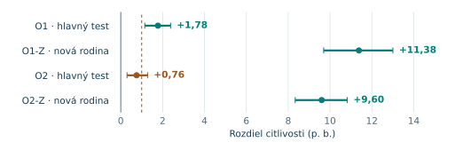
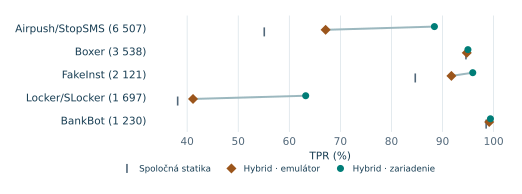
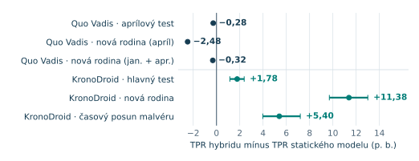

Quo Vadis a KronoDroid
Porovnanie dát, výsledkov a hraníc dôkazov
Práca skúma, či možno škodlivý softvér (malvér) spoľahlivejšie odhaliť spojením vlastností súboru, ktoré sa dajú získať bez jeho spustenia (statická detekcia), a prejavov pozorovaných počas behu alebo jeho napodobnenia (emulácie) (dynamická detekcia). Hybridný model používa oba druhy vstupov. Kaskáda zoradí viaceré modely do stupňov a zložitejší postup zapojí pri neistom alebo rozpornom rozhodnutí.
Posúdenie domnienky. Domnienka je opodstatnená, ak sa slabina chápe ako kvalita a úplnosť dát, nie ich veľkosť. Oba datasety majú desaťtisíce spárovaných vzoriek, žiadny však nespĺňa naraz všetky požiadavky, ktoré výskumná otázka kladie. Najvážnejšie chýba kontrolované porovnanie viacerých spôsobov zberu správania na rovnakých súboroch Windows. Pre tvrdenie o úspore celého systému je rovnako zásadné, že sa nedá zmerať čas od vstupného súboru po rozhodnutie.
Príznak je merateľná vlastnosť vzorky a vektor príznakov je ich usporiadaný zoznam. Jedna vzorka je jeden súbor. Rodina je skupina malvéru podľa označenia v datasete. Označenie samo osebe nevylučuje podobnosť kódu medzi rodinami. Zero-day v tejto práci označuje laboratórny scenár, v ktorom sa vynechá jedna rodina z tréningu aj validácie. Vypovedá o prenose na nevidené označenie rodiny. Detekcia skutočne nového útoku v prevádzke vyžaduje ďalší dôkaz.
Tréning učí model aj transformácie vstupov. Validácia slúži na výber modelu, jeho nastavení a hraníc rozhodovania. Test vyhodnocuje už určený postup. Hlavné modely sa vyberali podľa citlivosti pri najviac 1 % falošných poplachov na validácii. Pri tesných výsledkoch rozhodoval výkon naprieč prahmi a potom čas procesora. Výsledky modelov sa spravidla priemerujú cez tri seedy, teda tri začiatočné nastavenia generátora náhody.
| Miera | Význam |
|---|---|
| TPR a FPR pri prahu z validácie | TPR je podiel skutočne škodlivých vzoriek, ktoré model zachytí. FPR je podiel neškodných vzoriek, ktoré model omylom označí. Prah je hranica skóre, pri ktorej model zahlási malvér. Hranica z validácie sa prenesie na test a testovacie FPR sa môže od cieľa 1 % odchýliť. Týmto spôsobom sa hodnotia tézy. |
| TPR pri FPR 1 % z ROC testu | ROC krivka zobrazuje dvojice FPR a TPR pre rôzne prahy. Odčítanie pri najviac 1 % testovacieho FPR porovná schopnosť zoradiť vzorky pri rovnakom tolerovanom FPR. ROC-AUC je plocha pod krivkou a sumarizuje kvalitu poradia naprieč prahmi. Odčítaný bod opisuje testovacie skóre. Prah pre prevádzku sa z neho nevyberá. |
p. b. znamená percentuálny bod, čiže priamy rozdiel dvoch percent. Prevalencia je podiel malvéru medzi všetkými vzorkami. Počet falošných poplachov na jeden skutočný pri nízkej prevalencii je prepočet z TPR a FPR pri predpoklade, že sa tieto miery prenesú na nové zloženie prevádzky. [P1, P2, P4, P5]
LightGBM vytvára súbor rozhodovacích stromov, kde ďalšie stromy postupne opravujú chyby predchádzajúcich. Porovnávali sa aj logistická regresia (lineárne skóre), Random Forest (hlasovanie stromov), malé a veľké viacvrstvové neurónové siete (MLP) a pri Quo Vadis aj siete pracujúce s poradím volaní. Pri skorej fúzii sa spájajú vstupné príznaky a pri neskorej fúzii už vypočítané skóre.
Destilácia učí menší model (študenta) aj zo skóre referenčného modelu (učiteľa). Takéto mäkké označenie zachytáva aj mieru istoty. Učiteľ ho predpovedá modelom trénovaným bez príslušnej časti tréningu. Kontrola s rovnakou architektúrou používa iba označenia dát.
Kaskáda A potrebuje dynamiku pre každý súbor. Pri zhode statického a dynamického modelu rozhodnú ony a pri nezhode hybrid. Kaskáda B začína statickým modelom a dynamiku vyžiada iba pre neisté prípady. Toto postúpenie je eskalácia. V základných variantoch baselines sú v stupňoch vybrané samostatné modely LightGBM. Varianty main používajú študentov (schéma na nasledujúcej strane). Špecialista je druhý stupeň učený na vzorkách blízko prahu prvého modelu.
Čas CPU je čas procesora na výpočet z pripravených vstupov vrátane transformácie modelu. Dávkový čas opisuje spracovanie viacerých vzoriek naraz. [P1–P5]
| Skratka | Význam |
|---|---|
| V1–V4 | Etapy experimentov. V1–V3 na Quo Vadis (Windows), V4 na KronoDroid (Android). |
| real_full | Hlavná vetva V4: všetkých 78 129 APK so statikou a s dynamikou zo skutočného zariadenia. |
| real_P, emu_P | Párové vetvy V4: 63 316 APK dostupných v oboch prostrediach. Statika aj rozdelenie sú rovnaké, dynamika pochádza zo zariadenia (real_P) alebo z emulátora (emu_P). |
| real_time | Doplnkový časový scenár V4: starší malvér na učenie, novší na test. |
| O1, O2 | Otázky V4. O1: o koľko hybrid zlepší TPR oproti statike. O2: o koľko je tento prírastok väčší so zariadením než s emulátorom. Prípona -Z označuje scenár vynechanej rodiny. |
| D-norm | Kontrola V4, v ktorej sa počty volaní nahradia ich podielmi z celkovej aktivity. |
| A-/B-baselines, A-/B-main | Varianty kaskád A a B s modelmi LightGBM (baselines) alebo so študentmi (main). Ďalšie varianty (nokd, heavy, modal, heavyteacher) sú kontroly študentov: bez učiteľa, s väčšou sieťou, s učiteľom z jednej modality a so silnejším učiteľom. |
| B-spec, B1–B3 | Kaskáda B so špecialistom (V3) a tri vopred určené kritériá jeho úspechu. |
| Téza 1–4 | Tvrdenia dizertácie o novej rodine, falošných poplachoch, destilácii a náročnosti (oddiel Tézy). |
Overené. Projekt použil verejné vydania Quo Vadis s PE súbormi pre 32-bitovú architektúru (Portable Executable je formát spustiteľných súborov Windows). EMBER je štandardizovaný spôsob opisu takýchto súborov. Má 2 381 číselných príznakov v deviatich skupinách vrátane histogramov bajtov, textových reťazcov, hlavičiek, sekcií a importovaných funkcií. Speakeasy emuluje vybrané časti prostredia Windows. Dynamický report zaznamenáva najmä volania API, teda funkcií, cez ktoré program využíva služby systému. Ide o emuláciu správania. Samotné spustiteľné súbory a kontextové cesty z pôvodného výskumu projekt nemal k dispozícii. [L1, P3]
| Označenie | Tréning · január | Validácia · január | Test · apríl |
|---|---|---|---|
| Neškodné | 21 974 | 2 442 | 7 940 |
| Malvér spolu | 44 857 | 4 984 | 9 399 |
| Backdoor | 9 955 | 1 106 | 1 940 |
| Coinminer | 5 893 | 655 | 1 684 |
| Dropper | 7 419 | 824 | 252 |
| Keylogger | 3 539 | 393 | 1 041 |
| Ransomware | 8 665 | 962 | 2 139 |
| RAT | 1 527 | 170 | 1 258 |
| Trojan | 7 859 | 874 | 1 085 |
| Spolu | 66 831 | 7 426 | 17 339 |
Rok 2022. Finálny index má 91 596 unikátnych párov. Pôvodne malo použiteľnú statiku 74 703 tréningových a 17 339 testovacích záznamov. [P3]
Rozhodnutia. Dáta sa párovali podľa SHA-256, digitálneho odtlačku súboru, a spájali všetky časti jeho reportu. Zlyhané extrakcie EMBER sa vyradili (366 evidovaných chýb vrátane jedného pomocného súboru). Všetkých 446 identických záznamov prekryvu tréningu a testu patrilo medzi keyloggery. Vyradili sa z tréningu, aby pôvodný aprílový test ostal zachovaný a model v ňom nevidel trénované súbory. Validácia tvorí približne desatinu januárových dát a zachováva zastúpenie rodín. Skupiny s identickým statickým vektorom sa nedelia. [P3]
Výhoda. Každý pár má statický aj dynamický vstup, test pochádza z neskoršieho zberu a reporty umožňujú študovať poradie volaní aj príčiny ukončenia emulácie. Na hlavný tabuľkový vstup sa použilo 2 000 najčastejších jednotlivých volaní a dvojíc po sebe idúcich volaní, vybraných z tréningu. Sekvenčné modely použili najviac 1 024 volaní. Ostatné udalosti a sumárne opisné stĺpce zostali v kontrolnom experimente, aby sa obmedzila závislosť od znakov konkrétnej konfigurácie emulátora. Krátke reporty zostali v spoločnom teste. [P3]
Overené obmedzenie. Audit reportov považuje unsupported_api za najčastejší dôvod ukončenia v teste, v tréningu a validácii sa tento dôvod nevyskytol. Audit hlavného vstupného bodu programu eviduje v teste 9 472 prípadov (54,6 %). Samostatná kategória vo V1 má 9 094 z 17 339 vzoriek, pretože veľmi krátke reporty majú pri triedení prednosť. Odlišný zápis chýb aj prudká zmena výskytu udalostí naznačujú zmenu verzie alebo nastavenia. Presná príčina nebola doložená. [P3, R1]
Vo V1 vybrala validácia LightGBM pre všetky tri druhy vstupu. Najlepší hybrid spájal príznaky skorej fúzie. Dvojvetvová sieť mala osobitnú vetvu pre statiku a osobitnú pre postupnosť volaní. V tabuľke sú miery pri prenesenom prahu a pri rovnakom FPR výslovne označené. [R1]
| Model | TPR prah z validácie | FPR prah z validácie | TPR z ROC FPR 1 % | TPR z ROC FPR 0,1 % |
|---|---|---|---|---|
| Statický LightGBM | 98,43 | 0,48 | 99,43 | 96,99 |
| Dynamický LightGBM | 65,72 | 1,98 | 58,49 | 31,39 |
| Hybridný LightGBM | 98,42 | 0,47 | 99,15 | 93,29 |
| Hybridná dvojvetvová sieť | 97,67 | 0,58 | 98,93 | 81,73 |
| A-main · študenti | 95,79 | 0,26 | — | — |
| A-baselines · LightGBM | 98,31 | 0,39 | — | — |
Priemer troch behov. Kaskády sú tu vyhodnotené ako hotové rozhodnutia. [R1]
Časový posun a vzájomné dopĺňanie. Dynamický LightGBM klesol z ROC-AUC 0,997 na validácii na 0,956 v teste. Doplnenie udalostí a sumárnych príznakov znížilo testové ROC-AUC na 0,9415. V podskupine ukončení unsupported_api bolo TPR dynamického modelu pri validačnom prahu približne 51 % a v kategórii ostatných reportov 83 %. Vynechanie podpisu, údajov o certifikáte a času zostavenia znižuje citlivosť statického LightGBM pri 1 % FPR o 0,4 p. b. To zmierňuje podozrenie zo závislosti od týchto štyroch stĺpcov. Dynamický model pri prahoch z validácie zachytil 23,3 zo 147,7 škodlivých súborov, ktoré statický model minul, a správne rozpoznal 32,3 z 38,3 neškodných vzoriek, pri ktorých sa statický model zmýlil. Ide o priemerné počty cez seedy. [R1]
V2 · vynechané rodiny. Na aprílových vzorkách siedmich vynechaných rodín dosiahli pri prahu z validácie statický, dynamický a hybridný LightGBM priemerné TPR 79,22 %, 50,9 % a 78,70 %. Kaskády A-main a B-main dosiahli 73,9 % a 73,1 % a zaostali za statikou pri každej rodine. Keylogger dosiahol so statikou 24,1 % v apríli a 42,9 % v januári. Skóre bez časového posunu aj výsledky po rodinách pomáhajú odlíšiť náročnosť rodiny od zmeny zloženia vzoriek. [R2, R3]
Výber prípadov na emuláciu. Pri variante B-baselines znamenal rozpočet 10 % výber desatiny validačných súborov blízko rozhodovacieho prahu. Hranica prenesená na test viedla k emulácii 21,5 % súborov (22,8 % v scenári vynechaných rodín). Kaskáda dosiahla časové TPR 98,31 % a FPR 0,39 %. Hlavné pásmo neistoty pre ten istý variant vyžiadalo emuláciu 0,4 % súborov a TPR pokleslo na 92,41 %. Pri B-main bolo dynamicky analyzovaných 10,7 % súborov a TPR kleslo na 95,87 %. [R2]
Interpretácia. Pravidlo „statický alebo dynamický model označí malvér“ zdvihlo priemerné TPR vynechanej rodiny len z 79,2 % na 79,8 % pri náraste FPR približne z 0,47 % na 2,2 %. Je to hranica pre toto spojenie hotových pozitívnych predikcií. Nový model pracujúci s pôvodnými príznakmi môže mať odlišné možnosti. [R2]
Špecialista. Druhý model kaskády B-spec sa učil na pätine tréningových vzoriek najbližších k statickému prahu. Hodnotil sa aj variant B-spec-dyn, ktorý zo statiky dostal iba skóre prvého stupňa. Výber tréningových vzoriek nemal pri ich skórovaní prístup k ich vlastným označeniam. Rozpočet získavania dynamiky bol určený na validácii. [P4, R3]
| Kritérium | Požiadavka | Quo Vadis |
|---|---|---|
| B1 Nová rodina | TPR aspoň o 1 p. b. nad statikou, FPR najviac ako statika. Špecialista dosiahne aspoň TPR statiky v 5 zo 7 rodín (vo V4 v 4 z 5). | Nesplnené. 79,03 % vs. 79,22 %. FPR 0,55 % vs. 0,47 %. Kritérium počtu rodín splnené. |
| B2 Poplachy | FPR nižšie než pri statike aj dynamike a TPR najviac 1 p. b. pod statikou. Hlavný aj zero-day test. | Nesplnené. V oboch testoch FPR vyššie ako pri statike. |
| B3 Prínos stupňa | TPR vynechanej rodiny aspoň o 1 p. b. nad B-baselines (rozpočet 10 %). FPR vyššie najviac o 0,1 p. b. | Nesplnené. TPR 79,03 % vs. 77,97 %. FPR 0,55 % vs. 0,36 %. |
B1 až B3 podľa [P4, P5], výsledky [R3]. B-spec-dyn prešiel B2 iba v časovom teste. Variant s užším tréningom na 10 % dosiahol 81,76 % TPR, mal vyššie FPR a splnil podmienku TPR len v 4 zo 7 rodín.
Neistota odhadov. Párový bootstrap opakovane vyberá testovacie vzorky s opakovaním a pre oba modely používa ten istý výber v každej triede. 95 % interval spoľahlivosti (IS) tu tvorí rozsah medzi 2,5. a 97,5. percentilom z 2 000 takýchto opakovaní. Zachytáva neistotu z výberu vzoriek pri daných modeloch. Rozdiely medzi seedmi alebo spôsobmi zberu tým nie sú pokryté. Podľa vopred určeného pravidla je celý interval rozdielu medzi hybridom LightGBM a statikou vo vymedzení ±1 p. b. v časovom teste (−0,01 p. b., IS −0,11 až +0,09) aj pri vynechaných rodinách (−0,51 p. b., IS −0,83 až −0,22). Obe miery sú pri prahu z validácie. [P4, R3]
Podskupina úspešnejšej emulácie. Po vylúčení prípadov unsupported_api a reportov s najviac piatimi volaniami ostalo 4 407 škodlivých a 3 174 neškodných súborov. Modely ani prahy sa nemenili. Pri vynechaných rodinách pridalo pravidlo „statický alebo dynamický“ +0,65 p. b. (IS +0,39 až +0,92), hybrid stratil −4,21 p. b. (−5,10 až −3,28) a špecialista −2,78 p. b. (−3,63 až −1,88). Kritérium citlivostnej analýzy, označené R2 v pláne robustnosti, je splnené. Podskupina je vybraná podľa výsledku emulácie a jej súbory boli ľahšie aj pre statiku. Pokus neopravuje emulátor ani neobnovuje chýbajúce pozorovania. [P4, R3]
Scenár C · prekalibrovanie. Prekalibrovanie znamená nastavenie hranice už natrénovaného modelu na nových neškodných súboroch. Pri približne 1 600 aprílových vzorkách oddelených od hodnotenia stúplo TPR statického modelu pri novej rodine o 3,58 p. b. (interval párových rozdielov cez rozdelenia a seedy +0,76 až +6,14) pri FPR približne 0,9 %. Pri asi 400 súboroch interval zahŕňa nulu. Pri približne porovnateľnom FPR sa výhoda špecialistu nepreukázala. Tento scenár dopĺňa pôvodný test. V3 bola navrhnutá na základe analýzy testu V2, čo obmedzuje nezávislosť potvrdenia. [P4, R3]
Overené. KronoDroid poskytuje štyri tabuľky. Oddeľujú neškodné a škodlivé aplikácie podľa prostredia zberu. Jedna APK je inštalačný balík Androidu. Statiku tvoria oprávnenia, ktoré aplikácia deklaruje, a opisné údaje, napríklad veľkosť súboru a počty komponentov. Dynamika má 288 počtov systémových volaní, teda požiadaviek aplikácie na jadro operačného systému. Stĺpec nr_syscalls je ich súčet. Emulátor Androidu spúšťa operačný systém vo virtuálnom prostredí. Druhý zdroj tvorí skutočné zariadenie. [L2, P6]
| Položka | Emulátor | Zariadenie |
|---|---|---|
| Neškodné aplikácie | 35 246 | 36 755 |
| Malvér | 28 745 | 41 382 |
| Spolu | 63 991 | 78 137 |
| Rodiny malvéru | 209 | 240 |
| Riadky s nulovým počtom volaní | 94 | 471 |
Pôvodná štúdia a audit stiahnutých tabuliek. [L2, P6]
| Vetva | Tréning | Validácia | Test |
|---|---|---|---|
| real_full · 78 129, zariadenie | 25 726 / 28 964 | 3 675 / 4 139 | 7 350 / 8 275 |
| real_P / emu_P · 63 316 v každej | 24 505 / 19 831 | 3 489 / 2 835 | 6 983 / 5 673 |
Vetvy na prekrytí majú totožné súbory v tej istej časti. real_P používa dynamiku zo zariadenia a emu_P z emulátora. [P5, P6]
Rozhodnutia. Vyradili sa štyri odtlačky s rozpornými označeniami. V každom zdroji sa tým odstránili dva záznamy na odtlačok. Po očistení z pôvodných 63 320 spoločných odtlačkov ostalo 63 316. Identifikátory, rodina, dátumy a údaje z VirusTotal (služba zhromažďujúca výsledky bezpečnostných nástrojov) boli z predikčných vstupov vylúčené. Ponechané boli označenia autorov. V emulátore chýbal počet súborov vnútri APK pre všetok malvér, preto sa stĺpec vypustil v oboch prostrediach. Výsledná statika má 185 vstupov (173 súvisiacich s oprávneniami, 11 opisných a príznak chýbania). Doplnenie z druhého zdroja pomohlo pri 264 súboroch. Zvyšných 379 dostalo nulu a indikátor chýbania. [P5, P6]
Overené obmedzenia. Riadky neobsahujú poradie volaní ani čas behu konkrétnej vzorky. Surové záznamy a APK boli dostupné na vyžiadanie, v projekte sa pracovalo s hotovými tabuľkami. Aj pri rovnakom súbore sa správanie mení. V audite bolo na pôvodnom prekrytí zhodných len 38 dynamických vektorov. Medián celkového počtu volaní sa podľa triedy obracia (emulátor 2 958 neškodné a 2 363 malvér, zariadenie 1 148 a 3 258). Nenulový podiel detekcií podľa VirusTotal má 12,6 % a 13,2 % neškodných riadkov. Je to signál možného šumu v označeniach. Samotné oprávnenia vytvorili mnoho zhodných vstupov. Audit našiel 53 128 opakovaných riadkov v emulátore a 64 424 v dátach zariadenia pri porovnaní iba týchto vektorov. [P6]
O1 skúma, o koľko v hlavnej vetve so zariadením hybrid zlepší TPR oproti statike. O2 porovná tento prírastok medzi zariadením a emulátorom na identických aplikáciách. Statický model, rozdelenie, označenia a formát príznakov sú v párovom porovnaní rovnaké. Prípona –Z znamená scenár vynechanej rodiny. Vopred určené kritérium pre O1, O2 a ich obdoby pri vynechanej rodine vyžaduje bodový prírastok aspoň 1 p. b. a dolnú hranicu 95 % IS nad nulou. [P5]

Hlavné rozdelenie. Na celom zariadení je náhodné, približne 70 % tréning, 10 % validácia a 20 % test. Pri rozdeľovaní sa zohľadní pomer tried aj rodín a vzorky s rovnakým statickým vektorom zostanú spolu. Dátumy pochádzajú z obsahu APK. Audit eviduje neplatné záznamy, predvolené roky 1980 a výrazný súvis roku s triedou. Preto má náhodné rozdelenie interpretáciu zmesi obdobia zberu. [P5, P6]
O1 a O1-Z sú splnené. Prírastok hybridu na zariadení je +1,78 p. b. na hlavnom rozdelení (IS +1,15 až +2,38) a +11,38 p. b. pri vynechaných rodinách (+9,70 až +13,00). Na spoločných aplikáciách je prírastok +2,76 p. b. na zariadení (IS +2,01 až +3,46) a +2,00 p. b. v emulátore (+1,32 až +2,63). O2 je nesplnené. Rozdiel +0,76 p. b. má interval +0,30 až +1,28 p. b. Bodový prírastok leží pod 1 p. b. O2-Z je splnené s rozdielom +9,60 p. b. (IS +8,33 až +10,82). [P5, R4]
Hlavné zistenie V4. Prostredie zberu dynamiky rozhoduje najmä pri nových rodinách. Na rovnakých aplikáciách so spoločnou statikou dáva zariadenie o 9,60 p. b. väčší prírastok než emulátor. Pri známych rodinách je rozdiel malý (+0,76 p. b.) a vopred určenú hranicu 1 p. b. nedosiahol. Aj emulátor Androidu však oproti statike pomáha (+2,00 p. b.). Slabý prínos dynamiky na Quo Vadis preto nemožno pripísať emulácii všeobecne, ale konkrétnemu zberu Speakeasy v tomto datasete.
D-norm je kontrola, v ktorej sa každý počet volaní vyjadrí ako podiel z celkovej aktivity a celkový počet sa vynechá. Hybrid s touto úpravou stále pridáva +1,74 p. b. na real_full (IS +1,14 až +2,36), +2,33 na real_P (+1,56 až +3,06) a +1,57 na emu_P (+0,88 až +2,20). Výsledok oslabuje vysvetlenie založené výhradne na celkovom množstve aktivity. Podiely môžu stále niesť znaky spôsobu zberu. [P5, R4]
| Scenár a vetva | Statický | Dynamický | Hybridný |
|---|---|---|---|
| Hlavný · real_full | 96,03 | 87,30 | 97,81 |
| Hlavný · real_P | 95,07 | 85,86 | 97,83 |
| Hlavný · emu_P | 95,07 | 84,88 | 97,07 |
| Vynechaná rodina · real_full | 73,50 | 65,46 | 84,87 |
| Vynechaná rodina · real_P | 74,21 | 67,31 | 88,38 |
| Vynechaná rodina · emu_P | 74,21 | 48,07 | 78,77 |
| Doplnkový časový posun malvéru · real_time | 84,56 | 64,67 | 89,96 |
Prírastky a rozdiely uvedené samostatne vychádzajú z nezaokrúhlených hodnôt. [R4]

Päť dostatočne veľkých a konkrétne označených rodín sa postupne vylúčilo z učenia aj validácie. Hodnotia sa všetky ich vzorky, teda pôvodný test spolu s odloženými tréningovými a validačnými exemplármi. FPR sa počíta na neškodnom teste. Na prekrytí je rozdiel medzi hybridmi najväčší pri Locker/SLocker (63,21 % vs. 41,15 %) a Airpush/StopSMS (88,41 % vs. 67,11 %). V real_full je hybrid nad statikou vo všetkých piatich rodinách. Pri Locker/SLocker zaostáva za dynamickým modelom (45,59 % vs. 49,96 %). [P5, R4, oddiel 3]
Doplnkový časový scenár. Malvér s použiteľným rokom 2008–2014 patrí podľa protokolu do učenia a validácie, roky 2015–2020 do testu. Skupiny rovnakých statických vektorov sa držia spolu. Neškodná časť vychádza z hlavného rozdelenia. Vylúčilo sa 448 škodlivých súborov s neplatným rokom. Hybrid pridáva +5,40 p. b. (IS +3,98 až +7,20). Výsledok podporuje prínos pri tomto posune malvéru. Dátum súboru v APK je len približný ukazovateľ jeho veku. [P5, P6, R4]
| Prístup | Hlavný TPR (%) | Hlavný FPR (%) | Hlavný podiel dynamiky (%) | Nová rodina TPR (%) |
|---|---|---|---|---|
| Statický LightGBM | 94,59 | 0,62 | 0 | 67,81 |
| Dynamický LightGBM | 86,88 | 0,90 | 100 | 63,53 |
| Hybridný LightGBM | 97,24 | 0,76 | 100 | 83,57 |
| A-baselines | 96,87 | 0,40 | 100 | 79,02 |
| B-baselines · hlavné pásmo | 96,56 | 0,42 | 16,61 | 77,23 |
| B-baselines · rozpočet 10 % | 96,17 | 0,38 | 10,31 | 75,74 |
| A-main · študenti | 93,97 | 0,30 | 100 | 76,19 |
| B-main · študenti | 93,69 | 0,29 | 38,31 | 74,39 |
| B-direct · pri neistote rovno hybrid | 96,92 | 0,68 | 38,31 | 81,74 |
| B-spec · rozpočet 10 % | 97,40 | 0,94 | 10,31 | 81,32 |
Podiel dynamiky vyjadruje podiel súborov poslaných na dynamickú analýzu. Pri novej rodine je priemer piatich vynechaných rodín. [R4, D1, D2]
Komplementarita vyjadruje, kedy jeden model napraví chybu druhého. Dynamický model v hlavnom teste zachytil v priemere 298,7 zo 447,3 škodlivých súborov, ktoré statika minula. Hybrid opravil 290,0 takýchto chýb a 71,3 pôvodne správnych rozhodnutí o malvéri zmenil na chybné. Pri neškodných má hybrid 55,7 chýb oproti 45,3 pri statike. Pravidlo „statický alebo dynamický model označí malvér“ dosiahlo pri vynechaných rodinách TPR 86,53 % pri FPR 1,49 %, hybrid 83,57 % pri 0,78 % [D2]. Na Quo Vadis zdvihlo to isté pravidlo TPR len na 79,8 % pri FPR 2,2 %. Kaskády z LightGBM v troch vetvách dosiahli vyššie hlavné TPR a nižšie FPR než statika s párovými IS mimo nuly. [R4, R5]
Dôležitosť príznakov. Premiešanie jednej skupiny príznakov na validácii naruší ich vzťah k výsledku a umožní sledovať pokles výkonu. Pri hybride LightGBM zo zariadenia kleslo ROC-AUC po premiešaní oprávnení o 0,1985 a po premiešaní počtov podľa typu volania o 0,1314. Po premiešaní celkového počtu je pokles pri uvedenej presnosti 0,0000. Test opisuje využitie skupín vyškoleným modelom na validácii pri seede 0. [R5]
Špecialista. Pri prahu z validácie má B-spec vyššiu citlivosť ako statika vo všetkých piatich rodinách každej vetvy. B1 a B3 nesplnil v žiadnej vetve. V real_full je oproti B-baselines s tým istým rozpočtom TPR novej rodiny 81,32 % vs. 75,74 %. Nárast FPR z 0,40 % na 0,87 % prekračuje toleranciu 0,1 p. b. Pri real_full je pri vynechaných rodinách FPR 0,87 % oproti statickým 0,63 % a pri real_P 0,87 % oproti 0,71 %. Aj v emu_P je FPR pri vynechaných rodinách vyššie (0,76 % vs. 0,71 %). B2 v emu_P prejde na hlavnom rozdelení, v zero-day ho nesplní. Podľa požiadavky oboch testov teda B2 neprešiel v žiadnej vetve. Vyššia citlivosť pri týchto prahoch ponecháva otvorenú otázku výkonu pri zhodnom FPR. [P5, R4, D1]
| Rozmer | Quo Vadis · V1–V3 | KronoDroid · V4 |
|---|---|---|
| Vzorky a statika | 91 596 PE, 2 381 príznakov EMBER vrátane štruktúry súboru. | 78 129 APK na zariadení, 63 316 párov APK medzi zdrojmi. 185 príznakov prevažne z oprávnení. |
| Správanie | Emulované volania Windows API, dostupné poradie a príčiny ukončenia. Žiadny paralelný zdroj dynamiky pre tie isté PE. | Počty systémových volaní, dostupné pre dve prostredia na rovnakých APK. Chýba poradie, priebeh a trvanie konkrétneho behu. |
| Hlavný test | Neskorší aprílový zber oproti januáru v tom istom roku. | Náhodný test. Doplnkový časový posun malvéru podľa dátumov v APK. |
| Vynechaná rodina | Sedem označení. Hlavný výsledok na aprílových exemplároch, doplnkovo január. | Päť označení. TPR zahŕňa všetky exempláre vynechanej rodiny, FPR vychádza z neškodného testu. |
Rozsah je počet vzoriek v experimentálnom spracovaní. [P3, P5, P6]

Porovnateľné popisne. Smer a veľkosť prírastku oproti vlastnej statike možno čítať pri tej istej miere. Napríklad pri vynechaných rodinách na Quo Vadis je TPR z ROC testu 83,81 % pre statiku a 81,33 % pre hybrid. Pri započítaní aj odloženého januára je to 88,17 % a 87,85 %. Porovnať sa dá aj charakter vzájomného dopĺňania pri validačných prahoch, verdikty téz a podiel dynamickej analýzy pri zaznamenanej kvalite. Rozpočet 10 % je určený na validácii a skutočný podiel na teste je samostatný údaj. [R2, R4, R5, D1]
Hranice porovnania. Absolútne TPR, FPR ani ROC-AUC neurčujú, ktorý dataset je „lepší“. Zmenila sa trieda súborov, pôvod označení, sila statiky, spôsob zberu správania aj časové usporiadanie testu. Prepad pri vynechaní rodiny aj rýchlosť sa dajú porovnať v rámci konkrétneho protokolu, medzidatasetovo len opisne. Priame porovnanie poradia volaní a celkového času zberu dynamiky nie je dostupné. Párovanie prostredia izoluje zdroj záznamu v rámci Android experimentu. Vetvy real_full a real_P sa líšia veľkosťou aj skladbou dát. Rozdiel ich výkonu teda neurčuje účinok samotnej veľkosti tréningu. [P3, P5, P6, R1–R5]
V tézach 1 a 2 „hybridný prístup“ znamená kaskádu. Pri téze 4 rozhoduje kaskáda B a podiel vzoriek vyžadujúcich dynamiku. Stabilitu pri téze 1 opisuje smerodajná odchýlka, ktorá meria typickú veľkosť odchýlenia TPR jednotlivých rodín od priemeru. Kritériá pre jednotlivé fázy pochádzajú z vopred zapísaných plánov. [P1, P2, P4, P5]
| Téza | Quo Vadis | KronoDroid |
|---|---|---|
| 1 · Nové rodiny Vyššia citlivosť a stabilita kaskády | Nepotvrdená. Statický LightGBM 79,22 % a A-baselines 77,97 %. Odchýlka cez rodiny 27,7 a 30,0 p. b. Kaskády so študentmi zaostávajú ešte viac. B1 pre špecialistu nesplnené. | Potvrdená pre vybrané varianty. V4 vyžaduje priemer ≥ statický + 1 p. b. a FPR ≤ statický. V real_full A-baselines 79,02 % vs. 67,81 %, s nižším FPR. Odchýlky 22,66 a 25,66 p. b. Prešlo 12 z 13 bežných variantov v real_full, 10 v real_P a 4 v emu_P. Špecialisti neprešli. |
| 2 · Falošné poplachy Zníženie pri zachovaní citlivosti | Potvrdená pre LightGBM. A-baselines a B-baselines s rozpočtom 10 % prešli v časovom aj zero-day teste. B-baselines dosiahla TPR/FPR 98,31 %/0,39 % v časovom teste a 95,36 %/0,36 % pre všetok malvér v zero-day behoch. Pri kaskádach so študentmi citlivosť klesla nad toleranciu. | Potvrdená pre vybrané varianty. FPR musí byť nižšie ako pri statike aj dynamike a TPR najviac 1 p. b. pod statikou. V oboch scenároch prešlo 10 bežných variantov v real_full, 6 v real_P a 4 v emu_P. Vo všetkých vetvách prešli A-baselines aj B-baselines pri rozpočte 10 %. |
| 3 · Destilácia Rýchlejší študent s porovnateľným TPR | Čiastočne potvrdená. Statický študent dvojvetvovej siete má rozdiel +0,06 p. b. na novej rodine (95 % IS −0,34 až +0,45 v tolerancii ±1 p. b.) a približne 107× nižší dávkový čas CPU. V porovnaní s vybraným hybridom LightGBM je pomalší a menej citlivý. | Nepotvrdená. Komplexným referenčným hybridom je veľká MLP. Menšie siete boli v dávke 2–8× rýchlejšie, v real_full stratili pri vynechaných rodinách približne 25 až 34 p. b. Hranicu 1 p. b. nesplnila žiadna vetva. Kontrola bez destilácie dosahuje porovnateľný výsledok. Obmedzením je teda skôr kapacita malej siete než samotná destilácia. |
| 4 · Náročnosť Menej dynamických analýz | Potvrdená v podiele emulácie. B-baselines pri rozpočte 10 % potrebuje 21,5 % behov v časovom teste a 22,8 % pri vynechaných rodinách oproti 100 % pri hybride či A. B-main s 10,7 % neudržal TPR. | Potvrdená v podiele behov. Pri splnení tézy 2 malo B-baselines s rozpočtom 10 % v hlavnom teste 10,31 % behov v real_full a 10,64 % na prekrytí. V zero-day behoch ide o 12,78 % a 12,88 % bežnej testovacej časti. |
Vo V4 vytlačený súhrn pri téze 2 v zero-day používa TPR vynechanej rodiny. Doplňujúci výpočet s TPR všetkého malvéru na bežnej testovacej časti podľa V2 dáva rovnaké počty variantov, ktoré spĺňajú podmienku súčasne v hlavnom aj zero-day teste. Niektoré verdikty mimo tohto prieniku sa v real_P líšia. [P2, P5, R2–R4, D1]
Pri 0,1 % prevalencii vychádza z prahov hlavného testu vo V1 na jeden správny poplach približne 4,90 falošných pri statike a 3,97 pri A-baselines. Vo V4 real_full je to približne 6,51 pri statike a 3,96 pri B-baselines s rozpočtom 10 %. Ide o laboratórny prepočet v rámci každého testu. [R1, D1]
Výskumná otázka kladie na dataset viacero požiadaviek naraz. Tabuľka ukazuje, ktoré z nich použité datasety spĺňajú. Podrobné argumenty za aj proti nasledujú na ďalších stranách.
| # | Požiadavka | Prečo | Quo Vadis | KronoDroid |
|---|---|---|---|---|
| 1 | Statika aj dynamika pre tie isté súbory | bez párovania nemožno hybrid ani kaskádu | áno | áno |
| 2 | Bohatá statika opisujúca štruktúru súboru | porovnanie so silným statickým modelom | áno (EMBER) | nie (oprávnenia) |
| 3 | Dynamika zo skutočného prostredia | záznam skutočného správania | nie (emulácia API) | áno (aj emulátor) |
| 4 | Konzistentný zber v tréningu aj teste | model nemá merať zmenu nástroja | nie | áno |
| 5 | Poradie a priebeh správania | súhrnné počty strácajú poradie | čiastočne | nie |
| 6 | Spoľahlivý dátum vzorky | realistický časový test | áno (obdobie zberu) | nie |
| 7 | Veľa dostatočne veľkých rodín | test nových rodín | 7 označení | 240 označení, 5 použiteľných |
| 8 | Čisté označenia | šum skresľuje FPR | bez zisteného problému | 12,6–13,2 % neškodných s nálezom VirusTotal |
| 9 | Dostupné súbory alebo časy analýzy | meranie skutočných nákladov kaskády | nie | nie |
| 10 | Veľkosť | stabilné odhady pri nízkom FPR | 91 596 párov | 78 129 APK |
Požiadavky sú návrhom autora tohto dokumentu, nie vopred určeným kritériom. Hodnoty z auditov [P3, P6].
Verdikt. Domnienka je opodstatnená. Hlavný záver o prínose dynamiky sa medzi datasetmi líši: na Quo Vadis hybrid statiku pri vynechaných rodinách neprekonal (−0,51 p. b. pri prahu z validácie), na KronoDroid pridal +11,38 p. b. (TPR pri FPR 1 % z ROC). Výsledok teda závisí od dostupných dát, čo ohrozuje vonkajšiu platnosť, teda zovšeobecniteľnosť záverov.
Spresnenie 1 · nejde o veľkosť, ale o kvalitu a úplnosť. Oba datasety majú desaťtisíce vzoriek a intervaly hlavných porovnaní sú úzke (napr. O1 približne ±0,6 p. b.). Chýba dataset, ktorý by spájal bohatú statiku, dynamiku zo skutočného prostredia, konzistentný zber, spoľahlivé dátumy a meranie nákladov (požiadavky 2, 3, 4, 6 a 9).
Spresnenie 2 · práca slabinu čiastočne zmierňuje. Dva datasety s opačnými silnými stránkami a párové porovnanie zariadenia s emulátorom menia časť obmedzenia na zistenie: prínos dynamiky závisí od spôsobu zberu, najmä pri nových rodinách, a pokles falošných poplachov kaskádami z LightGBM sa zopakoval na oboch datasetoch.
Domnienka „Najväčšou slabinou tejto práce je, že nemáme kvalitný veľký dataset so statickými aj dynamickými dátami“ spája veľkosť súboru dát, kvalitu merania správania a schopnosť vysvetliť rozdiel medzi platformami. Každá z týchto vlastností má iný dôsledok pre platnosť záverov.
| Rozmer | Argument v prospech domnienky | Protiargument a hranica dôkazu |
|---|---|---|
| Veľkosť a pokrytie | Počet súborov môže maskovať malý počet rôznych druhov a období. Quo Vadis má sedem označení malvéru a iba 32-bitový Windows. Android má veľa rodín, ale vopred určené pravidlo pre vynechanie spĺňa päť. | 91 596 párov v Quo Vadis a 78 129 párov v hlavnej vetve KronoDroid umožňujú laboratórne porovnania. Samotný počet vzoriek nevysvetľuje rozdiel. Počet súborov aj ich nezávislá rozmanitosť sú relevantné pri veľmi nízkom FPR. [P3, P5, P6] |
| Konzistentný zber | Na Quo Vadis sa s časom menia API stopy aj evidencia chýb. Dynamický model na teste stráca rozlišovaciu schopnosť. Pre tie isté PE chýba druhý zdroj správania. | Pri priaznivejšej emulácii ostáva zisk jednoduchého spojenia malý a hybrid klesá pod statiku. Technické ukončenia teda samy nedávajú úplné vysvetlenie. Vyfiltrovaná podskupina nie je opakované meranie. [R1–R3] |
| Zdroj dynamiky | O2-Z na zhodných APK ukazuje veľkú výhodu zariadenia v teste nových rodín. O1-Z dokladá prínos dynamiky nad statický model v hlavnej vetve. | Na hlavnom rozdelení leží bodový odhad O2 pod vopred dohodnutou hranicou. Dynamika z emulátora v KronoDroid tiež pomáha. O2-Z porovnáva dve konkrétne prostredia Androidu a neurčuje, aký efekt by mal iný zber pre Quo Vadis. [P5, R4] |
| Obsah príznakov | KronoDroid umožňuje kontrolované párovanie, ale bez poradia či dĺžky behu. Quo Vadis má sekvencie, ale z emulátora s neúplným pokrytím a bez originálnych PE v použitých dátach. | Odlišná statika môže vysvetliť rozdiel v prírastku hybridu. EMBER opisuje štruktúru súboru a statike môže ponechať menej priestoru na zlepšenie. Párové O2 drží statiku konštantnú len v rámci KronoDroid. [P3, P5, P6, R4] |
| Merateľnosť nákladov | Neznáme časy získania príznakov a konkrétnych behov bránia potvrdiť celkový výpočtový prínos. Rozpočet môže meniť aj výber dlhších či kratších behov. | Úspora počtu dynamických analýz je merateľná už z uložených výsledkov a platí pre zodpovedajúcu mieru tézy 4. Na kvalitu detekcie pri dodaných vstupoch možno odpovedať samostatne. [R1–R4] |
Interpretácia. Pre otázku, či slabý prínos dynamiky na Windows vysvetľuje zber, má najväčšiu váhu chýbajúce párové overenie na tých istých PE pri stabilných podmienkach. Pre otázku, či konkrétna kaskáda dosiahne prijateľnú citlivosť s menším podielom dynamických behov, poskytujú oba datasety priamu laboratórnu evidenciu.
| Slabina a závažnosť | Dôsledok pre záver |
|---|---|
| Vysoká · prenos do prevádzky Chýba skutočný čas celého procesu. | Merania CPU dávky začínajú pri hotových vstupoch. Pre real_full má B-baselines s 10 % rozpočtom odhad 0,2362 ms/vzorku oproti 0,2054 pri statike a 0,1787 pri hybride. Vo V1 je A-main drahšia než vybraný hybrid (0,6209 vs. 0,0858 ms). Celú kaskádu nahrádza súčet časov komponentov a ich podielov. Pre Speakeasy je 60 s horná hranica z konfigurácie. Skutočný čas analýzy môže závisieť aj od vzorky. [R1, R3, R4] |
| Vysoká · všeobecnosť detekcie Odlišné protokoly a označenia. | Pri Quo Vadis sa mieša posun v čase a v meraní. Pri KronoDroid hlavný náhodný test nehodnotí budúci zber. Odlišné dátové zdroje, neisté dátumy a označenia, malý počet vynechaných rodín a možný zdieľaný kód obmedzujú prenos na iné populácie. [P3, P5, P6, R2] |
| Vysoká pre tézu 3 · referenčný model a kapacita | Študent dostáva priamo iba jeden typ vstupu. Destilácia môže pomôcť len v rozsahu, ktorý sa dá odhadnúť z dostupných príznakov a ktorý zvládne jeho architektúra. Porovnateľnosť s pomalou dvojvetvovou sieťou nepreukazuje výhodu voči LightGBM. Pravidlo desaťnásobnej úspory je samostatná podmienka overenia študenta. Pri porovnaní s vybraným LightGBM vo V1 sa nesplnila a úspora vo V4 oproti veľkej MLP dosiahla približne dvojnásobok až osemnásobok. Menší model môže mať nízku dávkovú cenu a zároveň slabú citlivosť. [P1, R1, R2, R4] |
| Stredná až vysoká · nezávislosť overenia | V3 vyšla z analýzy toho istého aprílového testu. V oboch štúdiách prešli nastavenia modelov do pokusov s vynechanou rodinou z hlavného scenára, kde sa táto rodina mohla podieľať na pôvodnej voľbe. Priame učenie a validácia rodinu v príslušnom pokuse vynechali. Párový bootstrap neobsahuje neistotu z výberu iných rodín alebo datasetov. [P2, P4, P5] |
| Významná pre nízke FPR · posun prahu | Tesné výsledky môžu závisieť od niekoľkých neškodných súborov a pracovný bod sa po časovom posune mení. V3 ukazuje zlepšenie po prekalibrovaní aj bez nového malvéru. V interných súhrnoch V4 sa nepodarilo doložiť osobitné výsledky pre neškodné APK s nenulovým podielom detekcií VirusTotal a pre nulový počet volaní. [P4–P6, R3, R4] |
Hlavným dátovým obmedzením je chýbajúce kontrolované porovnanie alternatívnych zdrojov behaviorálnych dát na rovnakých súboroch Windows pri konzistentnom zbere. Verejné súbory dát umožnili rozsiahle laboratórne porovnania a na Androide aj párové porovnanie prostredí. Rozdiely v platforme, reprezentácii, označeniach a testovacom protokole však neumožňujú prisúdiť rozdiel v prínose hybridnej detekcie jedinému faktoru.
Návrh doplňujúceho overenia. Pre dizertačnú diskusiu je najinformatívnejší opakovaný záznam správania pre tie isté PE vo viacerých konzistentne zdokumentovaných prostrediach a časovo oddelený zber neškodných aj škodlivých vzoriek. Meranie času od vstupu po rozhodnutie by zodpovedalo samostatnú otázku nákladov. Tieto merania sú návrhom pre samostatné overenie.
Na Quo Vadis dominuje silný statický model. Pridanie dynamiky zo Speakeasy pri vynechaných rodinách neprinieslo spoľahlivý zisk a samotná chyba ukončenia emulácie tento výsledok nevysvetlí. Kaskády z LightGBM znížili falošné poplachy pri zachovanej citlivosti v stanovenej tolerancii. Prekalibrovanie na dostatočnom počte nových neškodných súborov pomohlo obnoviť plánovaný pracovný bod.
Na KronoDroid hybrid zvyšuje citlivosť oproti statike. Zdroj správania na rovnakých APK priniesol prínos nad rozhodovaciu hranicu pri nevidených rodinách. Pri hlavnom náhodnom teste zostal rozdiel zdrojov pod hranicou. Kaskády zo základných modelov LightGBM splnili kritérium pre falošné poplachy vo všetkých troch vetvách. Destilovaní študenti v tomto datasete nedosiahli požadovanú citlivosť.
Spoločný výsledok je menší počet dynamických analýz pri zachovaní dohodnutej úrovne detekcie v úspešných konfiguráciách kaskády B. Dôkaz o nákladoch celého systému by vyžadoval meranie zberu príznakov. Rozdiel oboch datasetov je dôvod zúžiť výklad na konkrétne dáta, protokoly a architektúry.